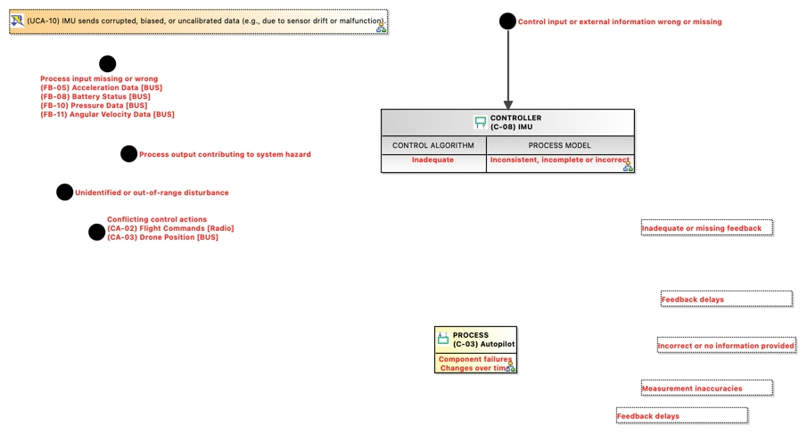

(UCA-10) IMU sends corrupted, biased, or uncalibrated data (e.g., due to sensor drift or malfunction).
UnsafeControlAction
GCAP_NTP241_UNINA > GCAP_NTP241_UNINA > STPA Analysis > Control Structure > (C-03) Autopilot > Feedback: (C-08) IMU -> (C-03) Autopilot > (FB-05) Acceleration Data [BUS] > (UCA-10) IMU sends corrupted, biased, or uncalibrated data (e.g., due to sensor drift or malfunction).No description.
Content
Control Action
Violated Constraints
- (SC-01) The drone shall initiate controlled emergency procedures upon detection of flight instability.
- (SC-04) The autopilot shall prevent climb commands exceeding the altitude ceiling.
Hazards
Owned diagrams
CFD Causal Factor Diagram of UCA10 IMU sends corrupted biased or uncalibrated data eg due to sensor drift or malfunction
